chisq.1 <- chisq.test(df.1)Herbivoristudier
1. Fältstudie – betestryck i olika miljöer
Rasmus Hammar
Uppgift nr. 1
Frågeställning: Föredrar älg, rådjur och hare olika skogstyper?
På fem platser i ett naturreservat där det har uppstått en öppning i skogen pga en storm observerar du antalet älgar, rådjur och harar som du ser under 3 timmar på kvällen. Platserna skiljer sig i att skogens återväxt består av olika trädarter. Du vill veta om vissa trädarter är mer attraktiva för vissa djurarter. Data är antal djur.
Statistisk metod
Jag vill testa om det finns en skillnad i antal djur av en viss art gentemot vilken trädart som dominerar bland återväxten. Genom att använda ett Chi-2 oberoende test undersöks om fördelningen av antal djur är jämn.
H0: Det finns ingen skillnad i fördelningen av djur mellan olika trädtyper (ingen skillnad mot förväntade värden).
H1: Det finns en skillnad mellan observerade och förväntade antal djur mellan de olika trädarterna.
Analys i R:
Resultat
Antagandet för Chi-2 test, att ingen cell har förväntat värde under fem, är uppfyllt. Analysen indikerar att det finns en skillnad på fördelningen av djur mellan områden med olika trädarter (X2(8) = 42.973, p = 8.889e-7). Genom att jämföra observerade (Tabell 1) och förväntade värden (Tabell 2) ser vi att älgar observerades oftare än förväntat där skogens återväxt dominerades av tall eller gran, men mer sällan för ek eller hassel. Rådjur observerades oftare för björk men mer sällan för gran eller hassel. Hare observerades oftare för ek eller hassel men mer sällan för björk, tall eller gran.
| Björk | Tall | Gran | Ek | Hassel | |
|---|---|---|---|---|---|
| Älg | 15 | 27 | 23 | 5 | 1 |
| Rådjur | 34 | 28 | 26 | 23 | 14 |
| Hare | 18 | 16 | 25 | 30 | 27 |
| Björk | Tall | Gran | Ek | Hassel | |
|---|---|---|---|---|---|
| Älg | 15.24679 | 16.15705 | 16.83974 | 13.19872 | 9.557692 |
| Rådjur | 26.84295 | 28.44551 | 29.64744 | 23.23718 | 16.826923 |
| Hare | 24.91026 | 26.39744 | 27.51282 | 21.56410 | 15.615385 |
Tolkning:
Jag fann att de tre djurens indikerade preferenser inte överlappade med varandra vilken kan tyda på att de föredrar vissa skogstyper över andra. Samtidigt fanns det vissa trädarter där det inte förekomm någon skillnad mellan observerade kontra förväntade antal, vilket skulle kunna indikera antingen en svagare preferens eller ingen preferens.
2. Laboratorieexperiment – effekt av bete på trädtillväxten
Rasmus Hammar
Uppgift nr. 2
Frågeställning: Hur påverkar olika typer av herbivori trädens tillväxt?
I växthus simulerar du betning av däggdjur genom att klippa av toppskotten och betning av insekter genom att klippa av 50% av bladen på 2-åriga björkar. Före experimentet och efter 5 månader mäter du trädhöjd (i cm).
Statistisk metod
Eftersom jag vill undersöka skillnaden i tillväxt mellan grupper (behandling) används differensen som respons i en envägs ANOVA.
H0: Det finns ingen skillnad i medelvärde av tillväxt mellan de olika behandlingarna.
H1: Medelvärdet av tillväxt skiljer sig mellan behandlingarna.
Model i R:
df.2 <- df.2 %>%
mutate(difference_cm = `höjd_efter_cm` - `höjd_före_cm`)
anova.2 <- aov(
sqrt(difference_cm) ~ behandling,
data = df.2
)
anova.2_tukey <- TukeyHSD(anova.2)Resultat
Efter en kvadratrotstransformation uppfyller ANOVA modellen antaganden om lika varians och normalfördelning (Figur 1). Analysen av behandling (F(2) = 21.01, p = 3.14e-6) indikerade att medelvärdet för minst en av behandlingarna skiljer sig och förklarar 60.9 % av variationen. Ett post-hoc test med Tukey HSD (Tabell 3) indikerar att det finns en skillnad mellan alla grupper.
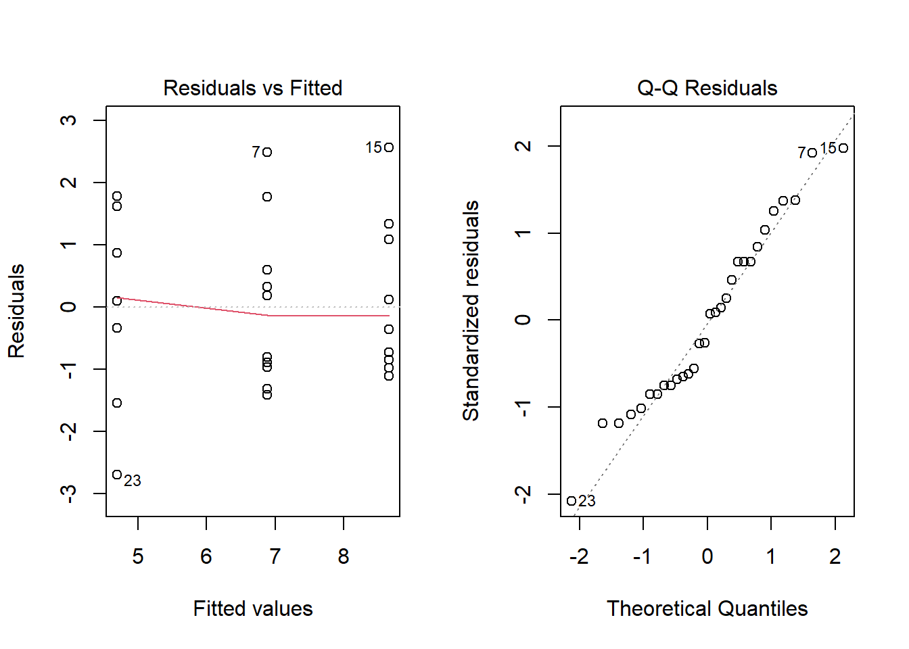
| diff | lwr | upr | p adj | |
|---|---|---|---|---|
| Klippt_blad-Ingen | -2.186253 | -3.7032679 | -0.6692377 | 0.0037451 |
| Klippt_toppskott-Ingen | 1.773127 | 0.2561119 | 3.2901421 | 0.0195184 |
| Klippt_toppskott-Klippt_blad | 3.959380 | 2.4423647 | 5.4763950 | 0.0000018 |
Tolkning:
Jag fann att alla behandlingar skiljde sig från varandra. Minst tillväxt hade behandlingen med klippta blad med ett genomsnittlig tillväxt på 24.1 cm, sedan ingen behandling med 49 cm och störst tillväxt var Klippt toppskott med 76.4 cm (Figur 2). Behandlingen av att klippa toppskott leder till högre tillväxt. I naturen kan detta motsvaras av förekomsten av större herbivorer och den ökade tillväxten kan anses gynnsam i exempelvis en skogsodling.
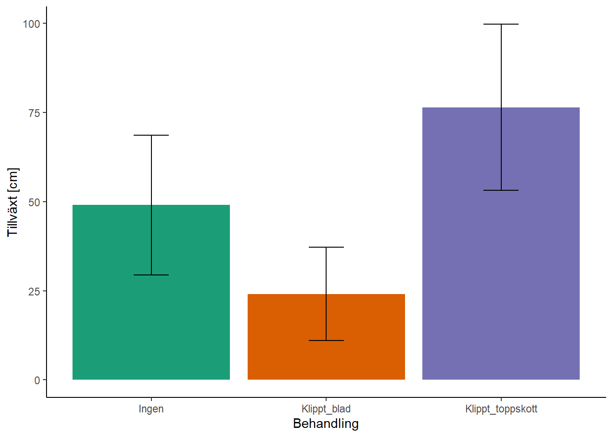
3. Fältexperiment – effekt av bete av hare och rådjur
Rasmus Hammar
Uppgift nr. 3
Frågeställning: Vilken effekt har bete av hare och rådjur?
Din handledare har redan för fem år sedan konstruerat ett fältexperiment för att undersöka effekt av bete av olika djurslag. Hon har stängt ut djuren (hare, rådjur) med hjälp av stängsel. Ni skördar blad från 5-åriga björkar och väger biomassan (i gram torrvikt).
Du vill undersöka om bete av hare och bete av rådjur har någon effekt, och om det finns någon interaktion mellan harbete och rådjursbete.
Statistisk metod
Jag gör en tvåvägs ANOVA för att undersöka hur bladmassan påverkas av förekomsten av hare, rådjur och interaktionen.
H0: Ingen skillnad i biomassans medelvärde beroende på förekomst av betning av hare och/eller rådjur.
H1: Skillnad i biomassans medelvärde beroende på förekomsten av hare och/eller rådjur.
Model i R:
anova.3 <- aov(
blad_g ~ Hare * `Rådjur`,
data = df.3
)Resultat
Residualanalysen (Figur 3) indikerar att antaganden om lika varians och normalfördelning är uppfyllda.
Analysen indikerar att förekomsten av hare leder till skillnad i medelvärde (F(1) = 24.816, p = 7.17e-5). Ett Tukey HSD post-hoc test visade att skillnaden förekom då förekomst av hare jämfördes med frånvaro av hare (Tabell 4).

| Hare:Rådjur | diff | lwr | upr | p adj |
|---|---|---|---|---|
| Nej:Ja-Ja:Ja | 65 | 10.17371 | 119.82629 | 0.0166128 |
| Ja:Nej-Ja:Ja | -5 | -59.82629 | 49.82629 | 0.9939766 |
| Nej:Nej-Ja:Ja | 68 | 13.17371 | 122.82629 | 0.0118594 |
| Ja:Nej-Nej:Ja | -70 | -124.82629 | -15.17371 | 0.0094520 |
| Nej:Nej-Nej:Ja | 3 | -51.82629 | 57.82629 | 0.9986755 |
| Nej:Nej-Ja:Nej | 73 | 18.17371 | 127.82629 | 0.0067073 |
Tolkning:
Harar är den avgörande faktorn och är mer destruktiva för tillväxten av bladmassa hos mindre björkar.
4. Fältstudie – insektsförekomst i träd av olika ålder
Rasmus Hammar
Uppgift nr. 4
Frågeställning: Finns det olika mängd insekter i träd av olika ålder?
Du hänger insektsfällor i 20 i ekträd av olika åldrar. Mätvärden är torrvikt av insekter i fällorna under en månad sammanlagt.
Statistisk metod
Jag valde att göra ett Pearson’s korrelation test.
H0: Det finns ingen korrelation mellan trädens ålder och mängden insekter.
H1: Det finns en korrelation mellan trädens ålder och mängden insekter.
Model i R:
corr.4 <- cor.test(
df.4$ålder_år, df.4$insekter_mg
)Resultat
Data uppfyller kraven av normalfördelning och tillsynes linjärt samband. Analysen indikerade en positiv korrelation (t(18) = 12.598, r = 0.948, p = 2.299e-10).
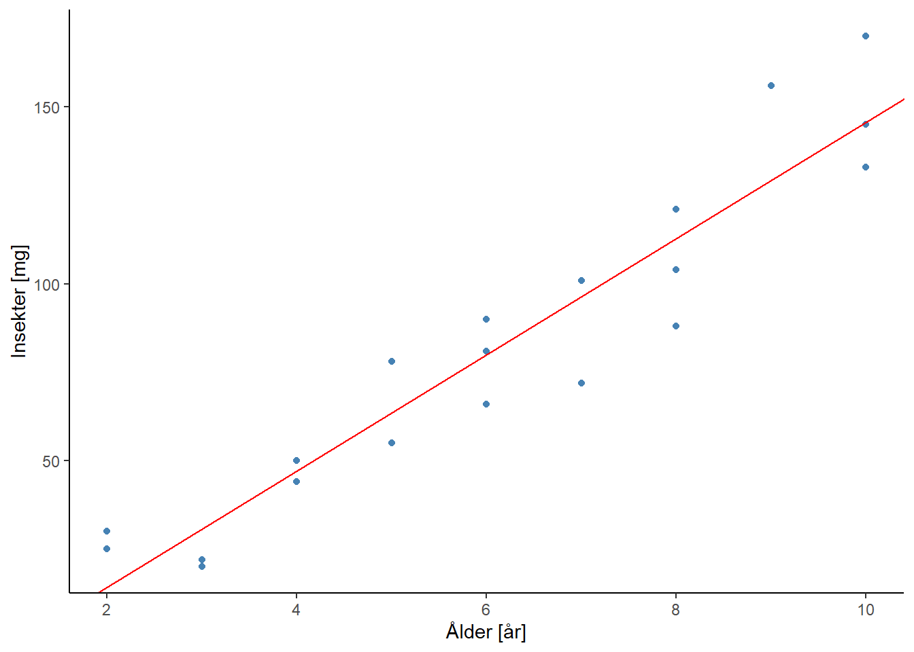
Tolkning:
Analysen indikerar att det finns fler insekter i äldre träd. Det är därför gynnsamt för den biologiska mångfalden och exempelvis pollination att bevara gamla träd.
5. Laboratorieexperiment – relation mellan bladens längd och bredd
Rasmus Hammar
Uppgift nr. 5
Fågeställning: Räcker det med att mäta bladlängd för att uppskatta bladarea?
Du mäter längden och bredden av trädens blad under dina växthusexperiment. Egentligen är du intresserad av bladarean som ett mått på trädens totala produktion av fotosyntetiska delar. Att mäta arean är krångligt, men man brukar anta att den är proportionell mot bladlängd x bladbredd. Om det finns ett bra samband mellan bladens längd och bredd så skulle det i dina fortsatta studier gå bra att bara mäta bladlängd för att kunna prediktera bladbredden och ändå få ett bra mått på bladarea.
Statistisk metod
Jag genomför en linjär regression för att undersöka sambandet hur bladlängd påverkar bladbredd.
H0: Det finns inget samband mellan blandlängd och bladbredd (linjens lutning = 0).
H1: Det finns ett samband mellan blandlängd och bladbredd.
Model i R:
lm.5 <- lm(
bladbredd_mm ~ bladlängd_mm,
data = df.5
)Resultat
Residualanalysen (Figur 5) indikerar att modellen uppfyller antaganden för lika varians och normalfördelning, men identifierar även en potentiell outlier (punkt 10). Analysen visar att det finns ett positivt samband mellan bladlängden och bladbredden (R2(18) = 0.550, p = 0.00018) enligt \(bladbredd = (0.3268 \pm 2 \cdot 0.0697) \cdot bladlängd + 7.8341\) (Figur 6).
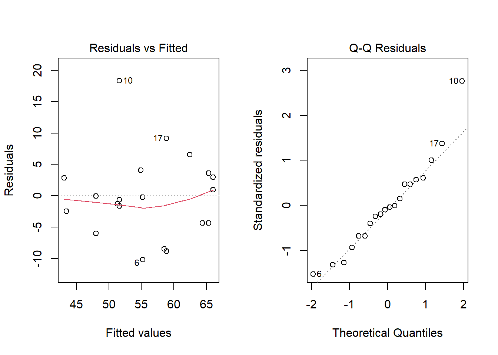
`geom_smooth()` using formula = 'y ~ x'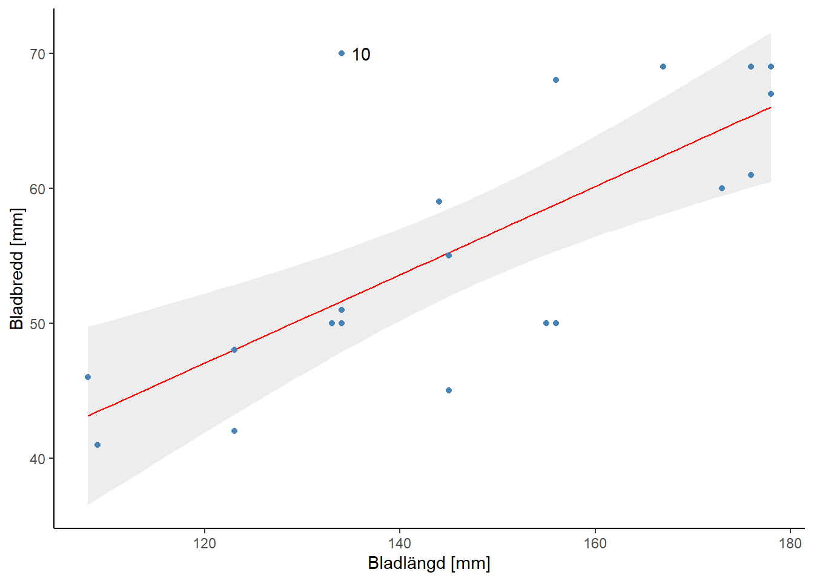
Tolkning:
Det finns ett samband som kan användas för att prediktera bladbredd, och därmed bladarea, utifrån bladlängd. Dock är sambandet inte särskilt starkt vilket innebär att det inte är den säkraste metoden.
6. Fältexperiment – försvarssubstanser hos träden
Rasmus Hammar
Uppgift nr. 6
Frågeställning: Leder insektsbete till att träden bildar försvarssubstanser?
Du vill undersöka om 5-åriga ekträd som betas starkt av insekter har ett större försvar än 5-åriga ekträd som inte utsätts för ett starkt betningstryck. I ett område med många insekter väljer du ut tio trädpar. Det är träd som står nära varandra och som är lika stora och gamla. I varje par behandlar du det ena trädet med insekticid och skyddar det med insektsnät i maj (’Behandlat’ = låg/ingen betning). Det andra trädet i paret behandlar du inte alls (’Referens’ = högt betningstryck). I slutet av augusti mäter du mängden tanniner i ekbladen. Data är medelvärden för 50 blad per träd.
Statistisk metod
Jag väljer att göra ett parat t-test då referens- och behandlingsträd är specifikt utvalda i par. På grund av det begränsade antalet observationer är det svårt att avgöra om data är normalfördelade; ett parametriskt test valdes.
H0: Det finns ingen skillnad i medelvärden mellan referens- och behandlade träd.
H1: Det finns en skillnad i medelvärde mellan referens- och behandlade träd.
Model i R:
ttest.6 <- t.test(
df.6$`tanninkonc_ref_mg/g`,
df.6$`tanninkonc_beh_mg/g`,
paired = T
)Resultat
Analysen indikerade att det finns en skillnad i mängd tanniner mellan referens- och behandlade träd (t(9) = 2.506, p = 0.034) där behandlade träd hade lägre koncentration (Figur 7 & Figur 8).
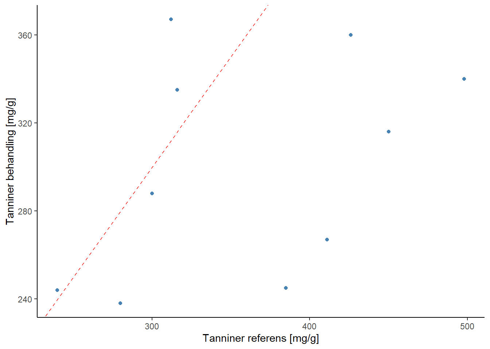
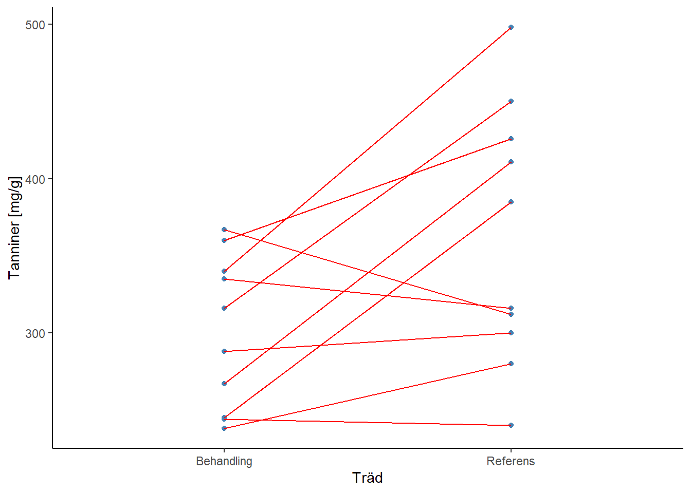
Tolkning:
Analysen visar att träd som utsätt för högre betning producerar högre koncentrationer tanniner som försvarsmekanism. Dock behövs fler observationer för att säkerställa resultaten. Experimentdesign var bra för att kontrollera påverkan av jordmån/miljö.
7. Laboratorieexperiment – effekt av olika betesintensitet
Rasmus Hammar
Uppgift nr. 7
Frågeställning: Har träd som fått större del av bladytan uppäten en lägre höjdtillväxt?
I växthus simulerar du olika grader av betning av insekter genom att klippa av delar av bladen på 2-åriga björkar. Efter 5 månader mäter du trädens höjd.
Statistisk metod
Jag gör en envägs ANOVA och behandlar den procentuella klippningen som grupper. Det skulle kunna utföras en linjär regression men i detta läge föredras ANOVA.
H0: Ingen skillnad i höjdtillväxt baserat på uppäten bladyta.
H1: Skillnad i höjdtillväxt baserat på uppäten bladyta.
Model i R:
Resultat
Residualanalysen (Figur 9) visade på lika varians och normalfördelning. Analysen indikerade en skillnad i höjdtillväxt (F(3) = 3.947, p = 0.0113) beroende på nivå av klippning (Figur 10).
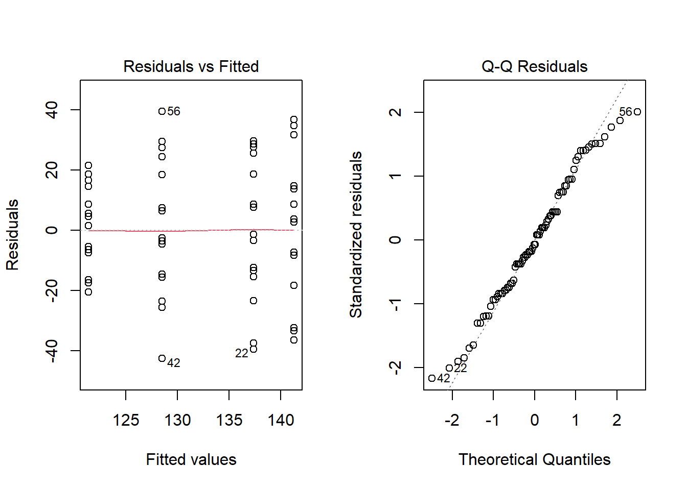
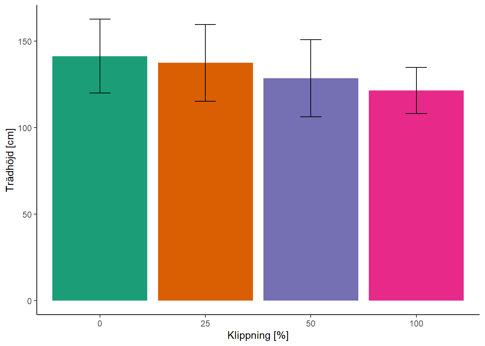
Tolkning
Större del av uppäten bladyta leder till lägre höjdtillväxt.
8. Laboratorieexperiment – beteseffekt på olika sorters körsbärsträdträd
Rasmus Hammar
Uppgift nr. 8
Frågeställning: Vilken effekt har olika typer av bete på körsbärsträdträd?
Du använder dig av 15 plantor av fem olika varieteter/sorter och utsätter dessa för olika simulerade betesbehandlingar för att testa effekten av detta på tillväxt av blad. Vid början av studien (juni) och efter fyra månader (oktober) mäter du den totala bladytan för varje träd (i dm2).
Statistisk metod
Jag väljer en tvåvägs ANOVA för att undersöka påverkan av två faktorer (Sort och Behandling) på tillväxten (differensen av bladyta). På grund av det låga antalet observationer utelämnas interaktionen från analysen.
H0: Ingen skillnad i tillväxt av bladyta baserat på sort och/eller behandling.
H1: Skillnad i tillväxt av bladyta baserat på sort och/eller behandling.
Model i R:
df.8 <- df.8 %>%
mutate(bladyta_diff = bladyta_okt - bladyta_juni,
bladyta_diff = sqrt(bladyta_diff))
anova.8 <- aov(
bladyta_diff ~ Sort + Behandling,
data = df.8
)Resultat
Efter en kvadratrotstransformering ser residualanalysen (Figur 11) fortfarande inte bra ut men beslutar att det är tillräckligt med tanke på det bristande antalet observationer. Analysen visar att tillväxten av bladyta skiljer sig baserat på både Sort (F(4) = 99.16, p = 7.52e-7) och Behandling (F(2) = 24.31, p = 0.00039) var för sig.
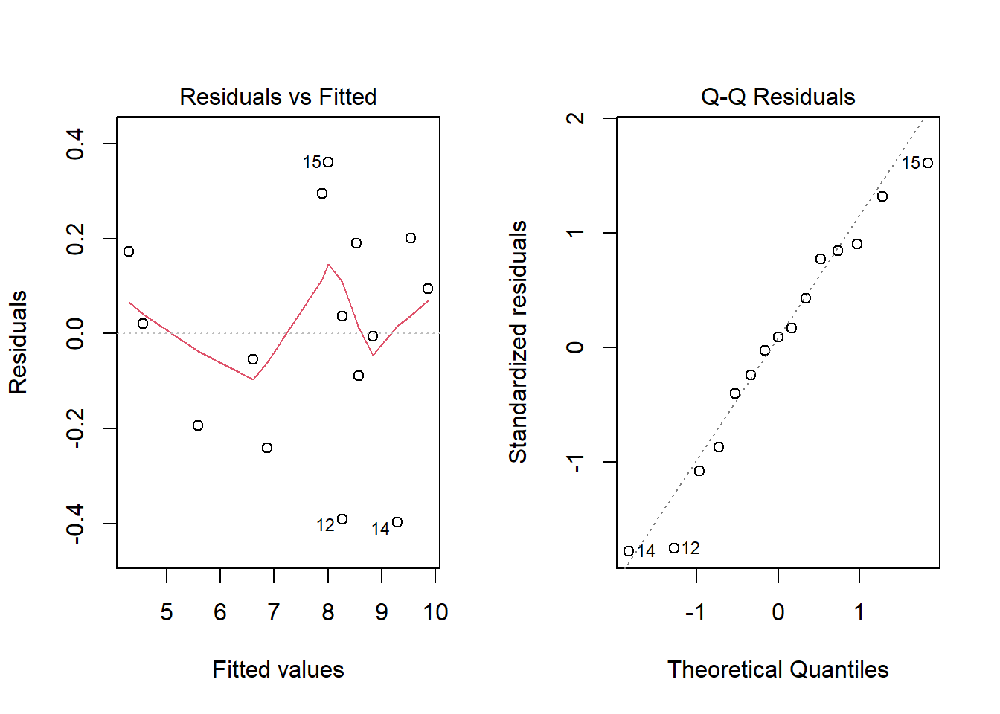
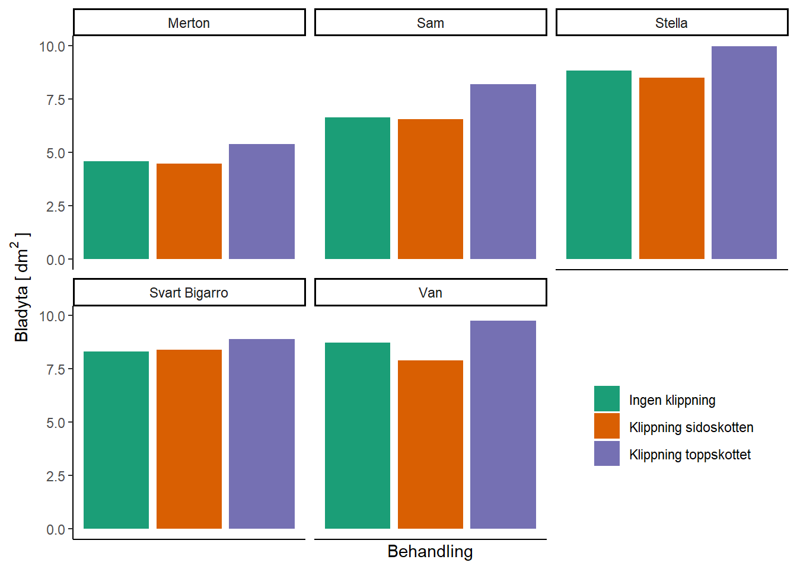
Tolkning
Eftersom vi har få mätvärden, och varje behandling utfördes på enbart en individ per Sort, är analysen, särskillt av interaktionen, problematisk/ej pålitlig.
Vi ser att Sorten Merton hade lägst tillväxt i bladyta jämfört med andra sorter. Stella hade däremot högst tillväxt. Behandlingen som verkade vara mest effektiv var klippning av toppskotten.
9. Laboratorieexperiment – kombinerad effekt av bete och gödsling
Rasmus Hammar
Uppgift nr. 9
Frågeställning: Ibland gödslas skogen med kväve för att öka trädens tillväxt. Gör detta att träden blir mer känsliga för betesskador?
42 st 3-åriga björkar användes i ett växthusexperiment. De delas upp i sex grupper om sju träd som fick olika kombinationer av behandlingar. Det fanns två gödslingsbehandlingar (nej, ja) och tre betesbehandlingar (ingen, låg, hög). Trädens höjdtillväxt mättes under en sommar. Ett träd dog, så en behandlingskombination har bara sex observationer.
Statistisk metod
Jag väljer att göra en tvåvägs ANOVA för att undersöka skillnaden i tillväxt beroende på gödsling och/eller betning.
H0: Ingen skillnad i tillväxt beroende på gödsling och/eller betning.
H1: Skillnad i tillväxt beroende på gödsling och/eller betning.
Model i R:
anova.9 <- aov(
Tillväxt_cm ~ Gödsling * Betning,
data = df.9
)Resultat
Residualanalysen (Figur 13) indikerade lika varians och en okej normalfördelning. Analysen indikerade en skillnad i tillväxt baserat på gödsling och betning var för sig samt interaktionen. En Tukey HSD post-hoc analys visade att det fanns en skillnad baserat på gödsling, betning (Ingen/Låg jämfört med Hög betning). Interaktionen visade på ingen skillnad i tillväxt mellan Ingen-Låg betning utan gödsling, samt ingen skillnad då båda jämförda betningsgrader gödslades (se Figur 14).
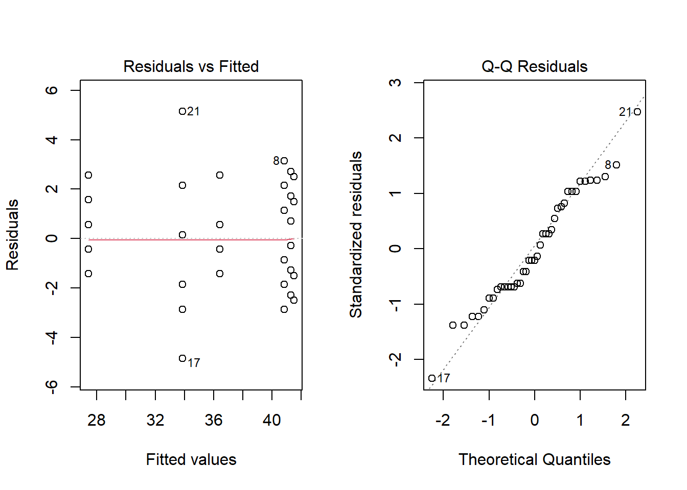

Tolkning
Gödsling leder till högre tillväxt överlag och anullerar påverkan av betning. Utan gödsling orsakar högre betningsgrad en minskning i tillväxt.